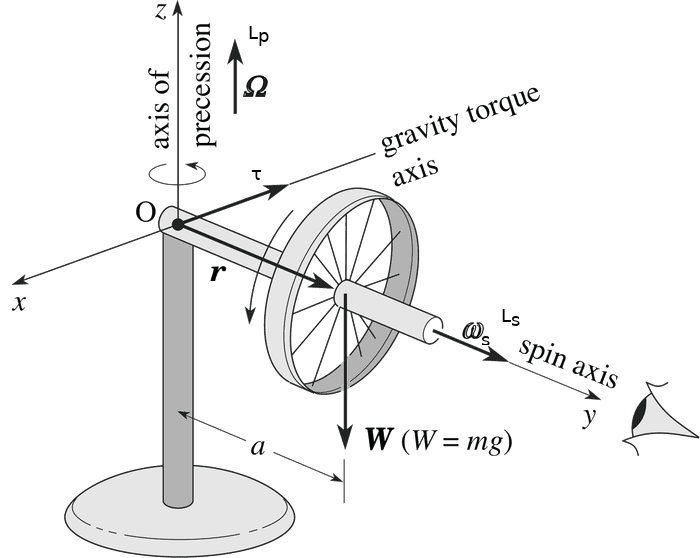
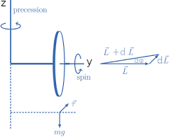

Precession of a Gyroscope
A simple gyroscope consists of a wheel fixed to a shaft and free to spin about the axis of the shaft Fig.1
If the top is not spinning, it acquires angular momentum in the direction of the torque, and it rotates around a horizontal axis, falling over just as we would expect. But if the wheel is spinning, it doesn't fall. Instead it precesses around: its axle rotates in a horizontal plane.
In a nonspinning gyroscope, Ls is zero and the torque τ due to Mg is directed along the x-axis as dL.
dL = τ dt = (Mga dt)i
As the wheel is released, the angular momentum increases in magnitude and will be always directed along the x-axis: if the fingers of your right hand curl in the direction of rotation, then your thumb defines the angular momentum direction.
In a spinning gyroscope, there is an angular momentum Ls due to the spin
Ls = Iωsk
where I is the rotational moment of the gyroscope. The total angular momentum is the vector sum of dL generated by the torque τ due to Mg, with Ls due to the spinning of the wheel around its axis (directed along the y-axis, originating the vector L + dL which form an angle dφ with the y-axis 
dφ = dL/L = (Mga dt)/(Iωs)
Since ωs = dφ/dt
ωs = (Mga)/(Iωs)